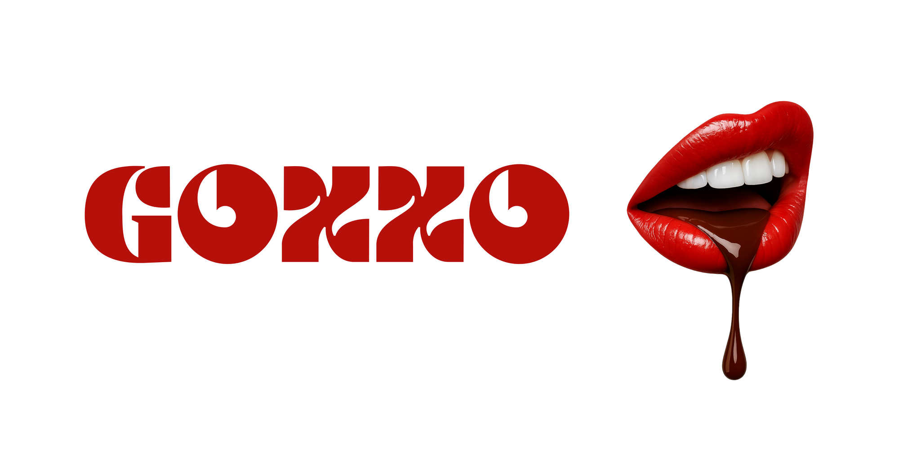
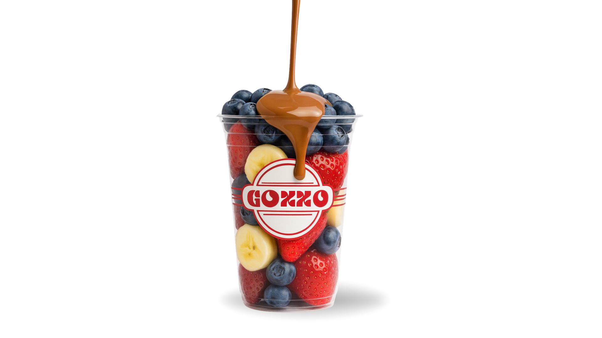
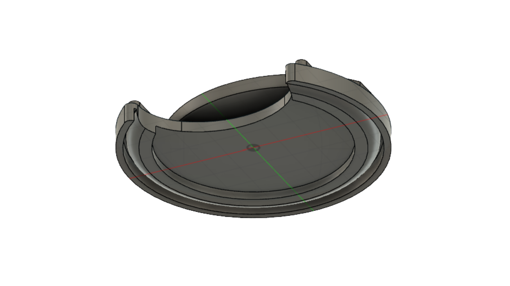
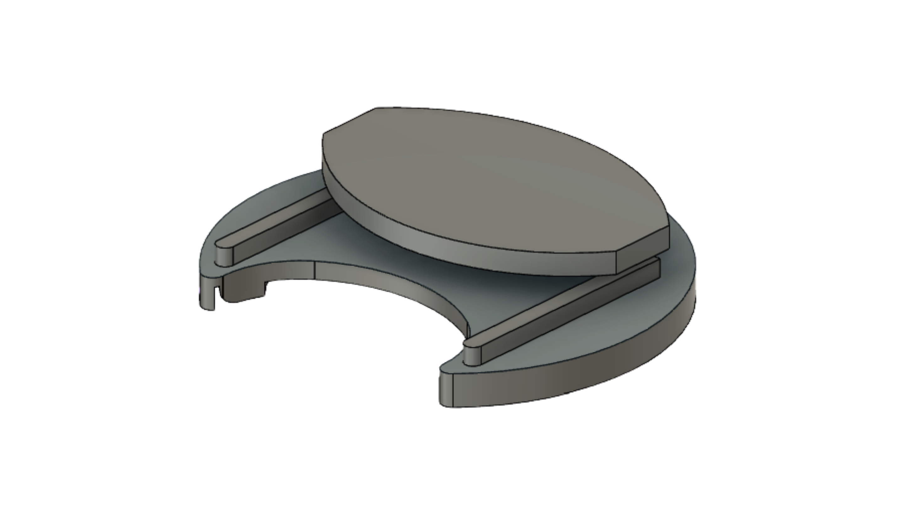
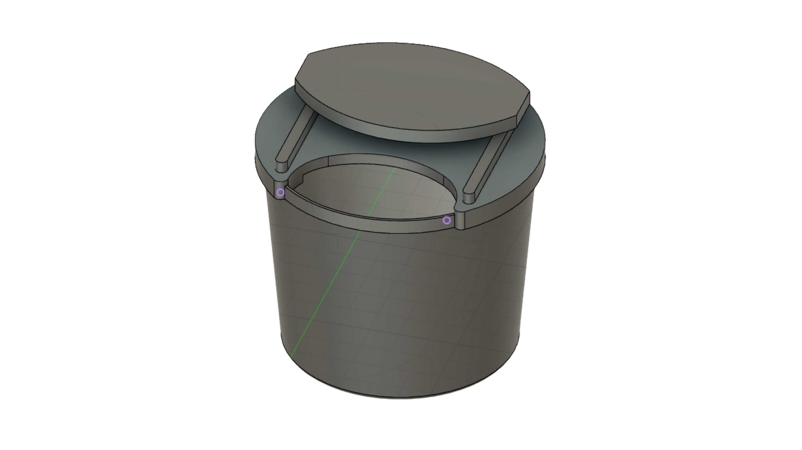
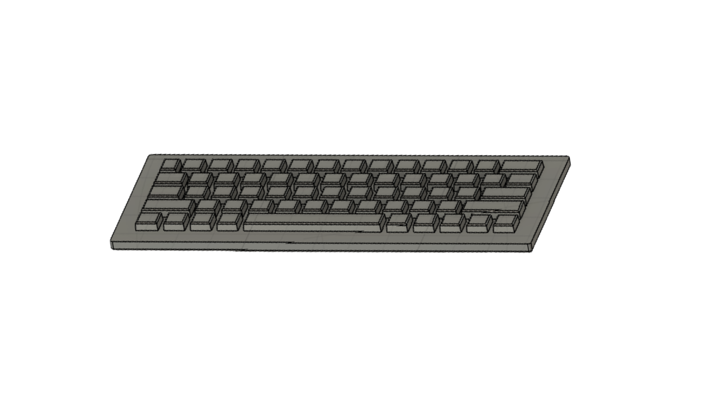
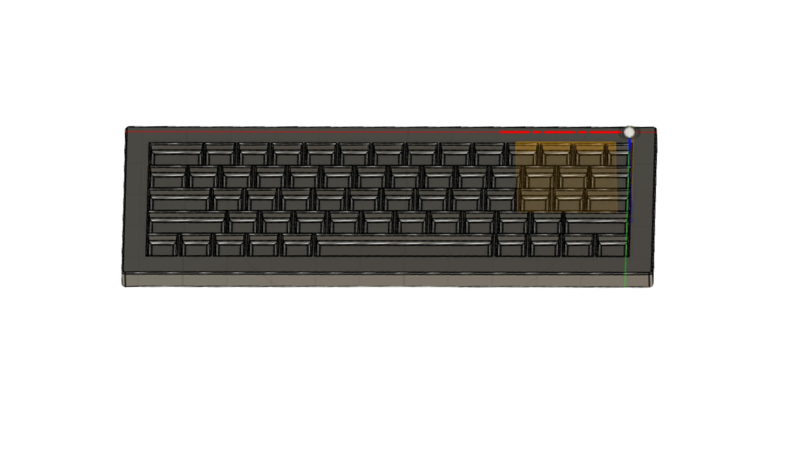
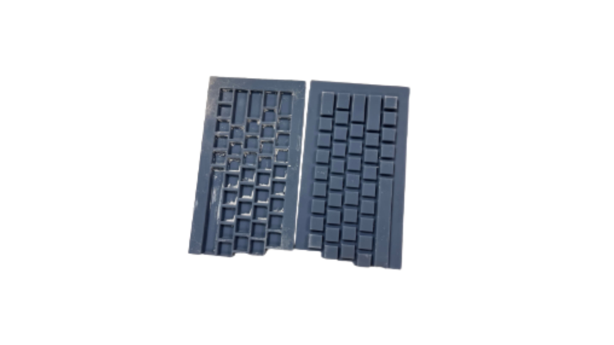

Toma de decisiones estratégicas
Me especializo en tomar decisiones claras y diseñar estrategias efectivas para llevar los proyectos al éxito.
Nicolás Martínez Riego
Estudiante de LEINN — Liderazgo, Emprendimiento e Innovación · Mondragon Unibertsitatea
Empezar ↓ hero.jpg
hero.jpg
01 — Quién soy
Soy una persona con un gran impulso para conseguir los objetivos que me propongo, y doy mucha importancia al aprendizaje, al cambio y al riesgo que conlleva llevarlos a cabo.
Estudiante de LEINN (Liderazgo, Emprendimiento e Innovación). El año pasado me especialicé en la primera parte de la carrera: toma de decisiones, desarrollo de visión y estrategia, y gestión de equipos dentro del liderazgo. Este último año me he centrado en la innovación, tanto desde el marco teórico como el práctico, para aplicar todo ese conocimiento en el emprendimiento y crear proyectos ambiciosos y profesionales.
Hoy la inteligencia artificial se ha convertido en una de mis herramientas centrales. Con Claude Code soy capaz de construir soluciones reales, automatizar procesos y plantear retos que hace poco habrían necesitado un equipo entero.
02 — Lo que sé hacer
Me especializo en tomar decisiones claras y diseñar estrategias efectivas para llevar los proyectos al éxito.
Trabajo en proyectos muy variados que me han enseñado a aprender deprisa y adaptarme a contextos distintos.
He liderado un equipo de 16 personas, aprendiendo a motivar, comunicar y coordinar para alcanzar objetivos comunes.
Combino la investigación teórica de la innovación con métodos prácticos y creativos para crear nuevos conceptos en mis proyectos.
Dentro de NITTON soy una de las personas que se encarga de que todo funcione por dentro: organización digital, gestión legal y control financiero de los distintos equipos.
Construyo cuadros de mando y análisis con Power BI para convertir datos dispersos en decisiones.
03 — Proyectos
"El aprendizaje viene de la acción, la medición y la repetición en proyectos. Es lo que nos conecta con el mundo real y nos hace aplicar la teoría aprendida."
The Pickle Center es nuestro proyecto para impulsar el pickleball en Euskadi. Funciona como e-commerce y consultora especializada: vendemos palas y material, asesoramos a clientes y hemos entrado en el marketplace de Decathlon para distribuir marcas internacionales como Wefoot.
Dentro de The Pickle Center está The Pickle Studio (antes Ingo), el motor que da vida a espacios, experiencias y oportunidades para la expansión del deporte: eventos, comunidad y colaboraciones con federaciones e instituciones.
Colaboradores
 Parke
Parke F. Vasca de Tenis
F. Vasca de Tenis RFET
RFET Zcebra
Zcebra Mondragon Unibertsitatea
Mondragon Unibertsitatea DUPR
DUPR Vitoria-Gasteiz
Vitoria-Gasteiz Fed. de pickleball
Fed. de pickleball
Goxxo es un producto de fresas con chocolate y toppings que lanzamos en las navidades de 2025-2026. Con él aprendimos a montar un negocio de hostelería dentro de un producto preparado para el mainstream: producción, logística de un perecedero, punto de venta y experiencia de cliente en plena campaña navideña.

goxxo.pngKonsultek es una consultora de datos especializada en Power BI para pymes. Ayudamos a las empresas a ordenar su información y transformarla en cuadros de mando claros para tomar mejores decisiones. Desarrollamos el CRM, las propuestas comerciales y la captación de clientes.
Dentro de esta línea hemos trabajado en Marketberri, un proyecto centrado en la eficiencia operativa del pequeño comercio de barrio en Euskadi.
Lockfest es un proyecto centrado en el desarrollo de una tapa para vasos de cubata, que busca prevenir la sumisión química al impedir la introducción de sustancias no deseadas en las bebidas. Lo desarrollé junto a mi equipo con la idea de implementarlo en los Puntos Violeta, para aumentar la seguridad y la protección en entornos sociales vulnerables.

lockfest-1.png
lockfest-2.png
lockfest-3.pngFeelkey nace de la necesidad de las personas invidentes de teclear en ordenadores portátiles. La solución es una funda de plástico termoconformado con la forma del teclado, cuyo relieve incorpora las letras en Braille para facilitar su uso. Está orientada sobre todo al aprendizaje del uso de ordenadores para personas jóvenes o mayores.

feelkey-molde-macho.png
feelkey-molde-hembra.png
feelkey-prototipo.pngKrito es una experiencia multijugador en la vida real, inspirada en los escape rooms pero ambientada en lugares recónditos llenos de misterios y experiencias inesperadas, con gran producción y realismo.
04 — Rol transversal
Más allá de mis propios proyectos, dentro de NITTON soy una de las personas que sostiene la estructura interna del equipo. Me encargo de que todo funcione por dentro: la organización digital, la parte legal y el control financiero de los distintos proyectos. Trabajo como una pieza más que vela por que todo vaya bien, y apoyo la toma de decisiones con análisis y cuadros de mando construidos en Power BI.
05 — Learning Journeys
Durante la carrera he realizado Learning Journeys internacionales a India y Corea del Sur. Estos viajes no han sido solo formativos: nos han permitido crear relaciones reales con proveedores en India y traer nuevos productos deportivos a través de nuestra entrada en Decathlon, con marcas como Wefoot. Hoy seguimos explorando nuevas posibilidades a partir de esos contactos.
06 — Lo que viene
En el futuro quiero seguir formándome como gestor de equipos, profundizando en estrategias cada vez más avanzadas y liderando proyectos más ambiciosos. En especial, quiero seguir impulsando The Pickle Center y The Pickle Studio, un proyecto en el que todo el equipo ha puesto un enorme esfuerzo y en el que confío plenamente.
Además, quiero especializarme en áreas clave como las ventas, la construcción de marca y la creación de comunidades, fundamentales para generar impacto real y sostenible.
El siguiente reto que me ilusiona es llevar la inteligencia artificial al mundo físico y no solo al digital: IoT, sistemas capaces de detectar y ayudar a personas en situaciones de urgencia, y soluciones que conecten el software con el entorno real.